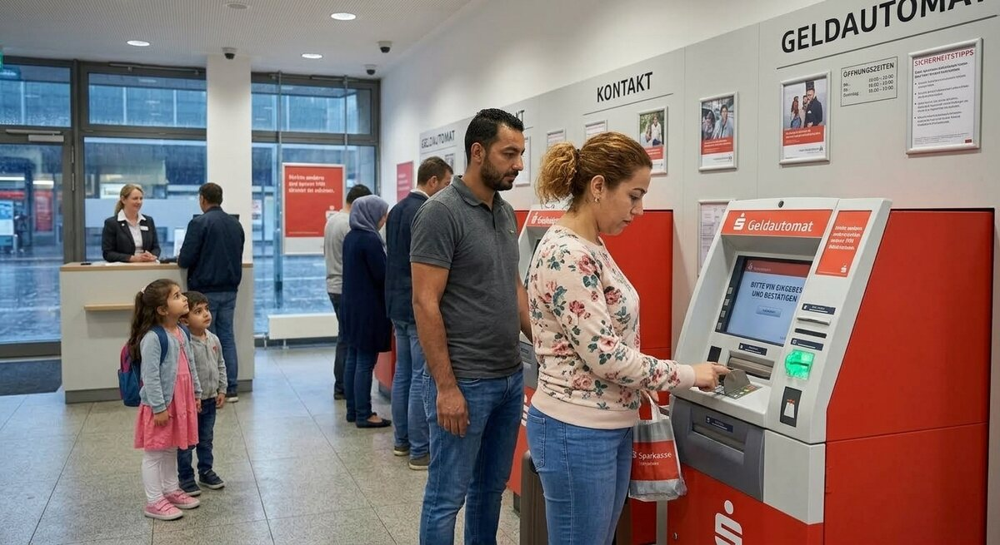

Teil 2 · Bild und Erfahrung
Karte 031
Am Geldautomaten oder in der Bank
Ausführliches Übungsmaterial zur Vorder- und Rückseite der Karte.

Ihre Aufgabe
- den Ort und die Person
- was die Person dort machen möchte
- welche Probleme es geben könnte
- welche Erfahrungen Sie mit Bankdiensten haben
- worauf man bei Geld und Sicherheit achten sollte
Interaktives Sprechtraining
Mit ChatGPT sprechen üben
Öffne ChatGPT, starte dort zuerst den Sprachmodus (Voice Mode) und füge anschließend den kopierten Übungsprompt in diesen Chat ein.
- Tippe auf den Button. Der Übungsprompt wird kopiert und ChatGPT wird geöffnet. Melde dich bei Bedarf in deinem ChatGPT-Konto an.
- Starte in ChatGPT zuerst den Sprachmodus (Voice Mode).
- Füge den bereits kopierten Prompt in den Chat des Sprachmodus (Voice Mode) ein und sende ihn ab.
- Beginne anschließend die Sprechübung.
- Wenn du die Übung beenden und Feedback bekommen möchtest, sage:
Die Übung ist beendet. Bitte gib mir jetzt Feedback.
Prompt anzeigen oder manuell kopieren
ChatGPT ist ein externer Dienst. Für den Sprachmodus (Voice Mode) musst du dich möglicherweise bei deinem ChatGPT-Konto anmelden und den Zugriff auf das Mikrofon erlauben. Verfügbare Funktionen hängen von deinem Gerät und Konto ab. Die Übung ersetzt keine offizielle Prüfungsbewertung.
Nützliche Satzanfänge
- Ich vermute, dass die Person …
- Sie möchte wahrscheinlich …
- Ein Problem könnte sein, dass …
- Ich habe mit Banken erlebt, dass …
- Wichtig ist für mich, dass …
Modellantwort anhören
Höre zuerst aufmerksam zu. Sprich danach nicht einfach alles nach, sondern bearbeite die Aufgabe mit eigenen Informationen.
Modellantwort
Ich vermute, dass die Person auf dem Bild Geld abheben oder etwas am Automaten erledigen möchte. Vielleicht steht sie in einer Bankfiliale oder draußen vor einem Automaten. Die Situation sieht normal aus, aber ich denke, dass viele Menschen dabei trotzdem aufmerksam sind, weil es um Geld und persönliche Daten geht. Vielleicht funktioniert die Karte nicht sofort oder die Person muss noch überlegen, welche Option richtig ist.
Ich habe mit Banken meistens sachliche, aber gute Erfahrungen gemacht. Wenn etwas unklar ist, frage ich lieber am Schalter nach, besonders bei Überweisungen oder neuen Karten. Wichtig ist für mich, dass man ruhig bleibt, die PIN nicht sichtbar eingibt und auf seine Unterlagen achtet. Heute kann man vieles digital machen, aber nicht alles ist sofort einfach, vor allem wenn die Sprache noch schwierig ist. Deshalb finde ich es gut, wenn Banken klare Informationen geben und Mitarbeitende bei Fragen freundlich helfen.
Mögliche Prüferfragen und Antwortideen
-
Nutzen Sie oft einen Geldautomaten?
Antwortidee: Ja, aber nicht sehr oft, weil ich meist mit Karte bezahle.
-
Was machen Sie lieber online, was in der Filiale?
Antwortidee: Einfache Dinge online, kompliziertere Fragen lieber in der Filiale.
-
Haben Sie schon einmal Probleme mit einer Karte gehabt?
Antwortidee: Ja, einmal hat der Automat meine Karte nicht gelesen.
-
Warum ist Sicherheit bei Banken wichtig?
Antwortidee: Weil es um Geld und persönliche Daten geht.
Wortschatz
| Deutsch | Englisch |
|---|---|
| der Geldautomat | ATM |
| die Bankfiliale | bank branch |
| Geld abheben | to withdraw money |
| die PIN | PIN |
| die Überweisung | bank transfer |
| die Karte | card |
| der Schalter | service counter |
| die Sicherheit | security |
Schnelltraining
Sagen Sie zwei Dinge, die man am Geldautomaten beachten sollte. Benutzen Sie dabei „nicht“ und „immer“.